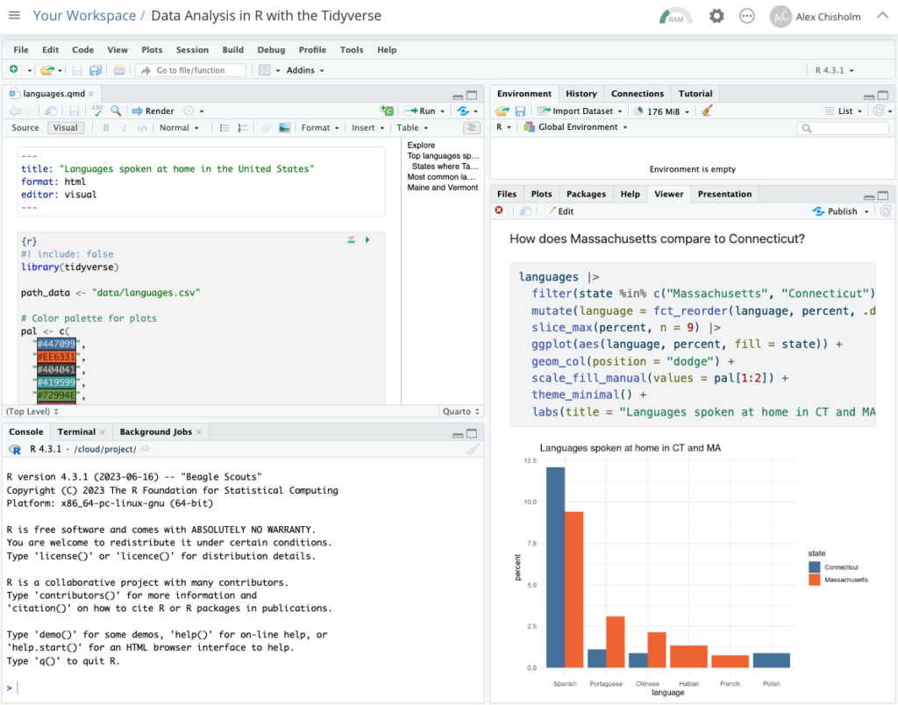
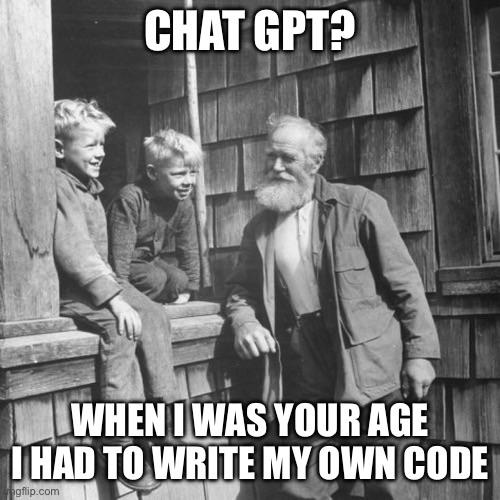

# A tibble: 5 × 2
date season
<chr> <chr>
1 23 January 2017 winter
2 4 March 2017 spring
3 14 June 2017 summer
4 1 September 2017 fall
5 ... ... Welcome to ENST/MRNE 222!
Environmental Data Analysis and Visualization
Hello world!
About me
Dr. Cassie Gurbisz, she/her (you can call me Cassie)
Expertise is in estuarine ecology, seagrass ecology, and coastal monitoring
My work generates a lot of data!
I ❤️ all things R, tidy data, and data visualization
About you
- Share your:
- first and last name
- pronouns
- your proudest data moment or your biggest data fail
- In groups discuss: What do you want to get out of this class? Are you afraid of math? Why or why not?
What is data science?
Data science is an exciting discipline that allows you to turn raw data into understanding, insight, and knowledge.
We’re going to learn to do this in a
tidyway – more on that later!This is a course on introduction to data science, with an emphasis on statistical thinking.
Environmental data science

What can you expect to learn?
From the syllabus: At the completion of this course, students will be able to gain insight from environmental data reproducibly and collaboratively using modern programming tools and techniques.
Specific outcomes include being able to:
- visualize environmental data
- wrangle and tidy data
- use functions and iterative programming
- define research questions and hypotheses
- construct statistical models to test hypotheses
- interpret data in environmental context
- communicate results
- keep data and code organized
- use collaborative version control tools
Software
Excel

R

RStudio

Posit Cloud
Data science life cycle
Data science life cycle

Import data

Tidy and transform data

Visualize

Model

Understand


Communicate

Program

Let’s give it a try!
Join our Posit Cloud computing space
We will use Posit Cloud, a cloud computing platform for all work in this course.
Join the space using this link
Select “Log in with Google” and use your SMCM credentials.
Select “Yes” when asked if you want to join the space.
Application exercise code-along
Application exercises are designed to give you practice applying new concepts
Early in the semester, I will provide most of the code. Later in the semester, the exercises will be more open-ended as you learn to code.
First I’ll walk you through Application Exercise 1 (ae-01).
When prompted, you’ll have a chance to run some of the code yourself
About this course
Class website
https://mrne222-sp26.github.io/website/
Contains course materials (slides, schedule, etc.)
Links to everything else you need (readings, our GitHub organiation, Posit Cloud, etc.)
What will we do?
Links to resources related to each week’s content are provided
Short lectures introduce you to concepts
Application exercises help you practice new concepts
Labs help you apply new concepts with lots of structured guidance
The final project sets you free into the wild! You will choose any dataset, ask a question, and answer it using the tools you have learned to use throughout the semester
Class prep
There will be a reading to prepare for most classes.
Goal of readings is to introduce you to general concepts and make you aware of very helpful resources
I will have an ungraded “quiz” at the begining of class as incentive for you to read and to help me gauge who is preparing for class
Application exercises
Designed to help you practice new concepts
Usually fairly short
We usually start them in class, and they must be submitted by the end of the week in which they were assigned
I will check that you completed the exercises but will not provide feedback - these are for practice. I generally want to see that you’ve made a good faith effort to complete the exercise.
Labs
More in-depth than application exercises
Designed to help you “learn through doing”
Typically 1/week
Must be submitted by the end of the week in which they were assigned
You can (and should!) discuss the labs with your peers but everyone needs to submit their own work
Project
We will complete a collaborative group project during the second half of the semester
Designed to help you put all of the skills you have developed to use and demonstrate your learning
In a nutshell: Find a dataset that interests you, ask a question groudned in the environmental domain, and answer it using compelling data analyses and visualizations
Final products: written report and an oral presentation
More on this later!
Course policies
Attendance
I take attendance but you won’t “lose points” for missing class
Come to class! You will fall behind if you miss too many classes and that will be reflected in your learning and, therefore, your grade
However, if you’re sick, stay home!
Late work - application exercises and labs
Application exercises and labs are due on Fridays. You have an automatic 2-day extension (Sunday) if needed - you don’t even have to ask.
I am also usually flexible if you really need an additional day or two to complete an assignmen, just ask.
If I don’t hear from you and I grade the assignment before you submit it, you’ll earn a 0.
Late work - labs
Important
You need to submit all of the labs assigned before the start of the group project in order to qualify to participate in the group project.
It wouldn’t be fair to your group members if you are not prepared to contribute meaningfully to the project. If you do not complete all of the labs leading up the the group project, you’ll need to complete the project on your own, which means you won’t be able to demonstrate one of the central course learning outcomes: collaborative coding.
Late work - project
The project will have several milestone components and due dates.
You really need to stick to these in order to stay on track with the project and participate meaningfully in peer review
Communication
I will make announcements via email, so check your email daily if you don’t already.
If you have a coding question, please don’t ask via email - come to office hours, ask during class or lab, or make an appointment to meet with me.
Feel free to email me about anything else
Don’t wait till the last minute to complete assignemnts b/c I might not be able to help you in time!
AI and other online help
Google is your friend and you should absolutely use it!
I’m wary of ChatGPT…How much are you really going to learn if you blindly copy and paste whatever code ChatGPT generates?
AI and other online help
Be cognizant of your learning. Don’t let ChatGPT make you dumb!
Give attribution to any code that isn’t your own (regardless of the source).

It me?
